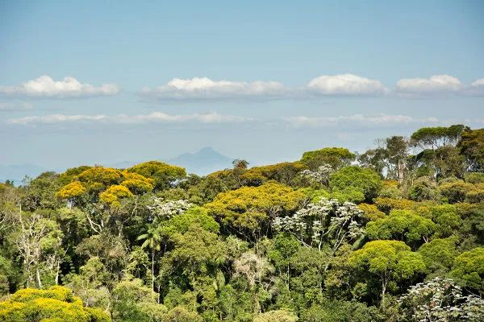
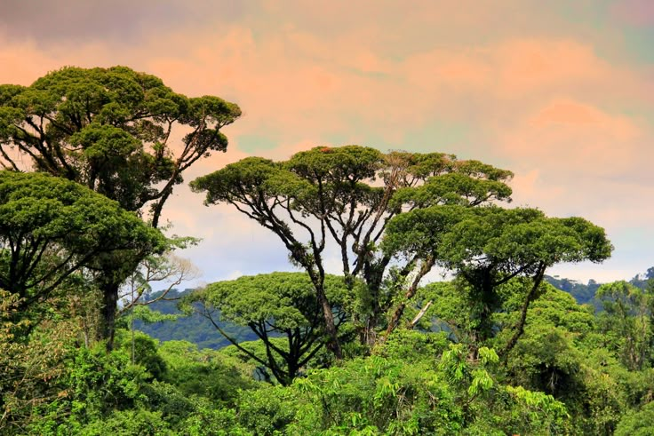
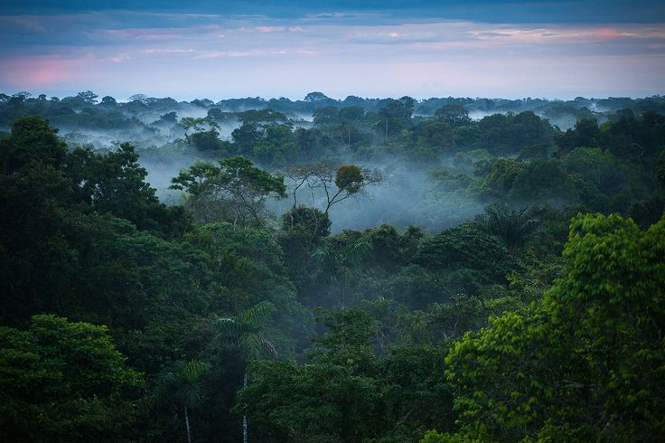

Flora
Mata Atlântica perde proteção
Congresso veta PL que aumentava a proteção da Mata Atlântica
>Flora
A flora é um dos aspectos mais importantes desse bioma. A vegetação da Mata Atlântica é composta por uma grande variedade de espécies de plantas, incluindo árvores, arbustos, ervas e epífitas.
04/05/2026

A flora da Mata Atlântica é uma das mais ricas do mundo, com mais de 20 mil espécies diferentes de plantas, sendo 8 mil endêmicas da região, e mais de 2 mil estão ameaçadas de extinção. Espécies vegetais da Mata Atlântica fazem parte da história do nosso país há muitos anos, como o pau-brasil, que foi uma planta importante no contexto histórico do país, e a jabuticaba, com frutos amplamente consumidos pelo país. O famoso chimarrão também de uma planta endêmica da Mata Atlântica, a erva-mate, também importante para o país. A extinção de uma planta pode causar um efeito dominó, como a extinção do jatobá. O jatobá, dependente de roedores para sua dispersão, e com redução desses animais, os frutos apodrecem, e poucas plantas jovens conseguem se manter. E sem jatobá, morcegos frugívoros que realizam polinização, perdem uma fonte de alimento. A árvore que batizou nosso país, o pau-brasil (Paubrasilia echinata), é mais uma das plantas em criticamente ameaçadas de extinção, possui apenas 10 mil exemplares com poucacapacidade de reprodução e regeneração, muitas vezes isolados. As florestas da Mata Atlântica fornecem água, energia elétrica, regulam o clima, inclusive ajudam o agronegócio, sendo responsáveis por auxiliar na polinização de plantações de soja, laranja e café, e combatem pragas e doenças que atingem as plantações. Uma forma de recuperar a fauna da floresta é o plantio de ipês, jacarandá, cedros e jequitibás, que são madeiras de alto valor.



Flora
Congresso veta PL que aumentava a proteção da Mata Atlântica
>Flora
Mata Atlântica perdeu 11,5% de vegetação nos últimos 40 anos
>Flora
Mesmo com o reflorestamento, a floresta não consegue voltar ao estado anterior
>